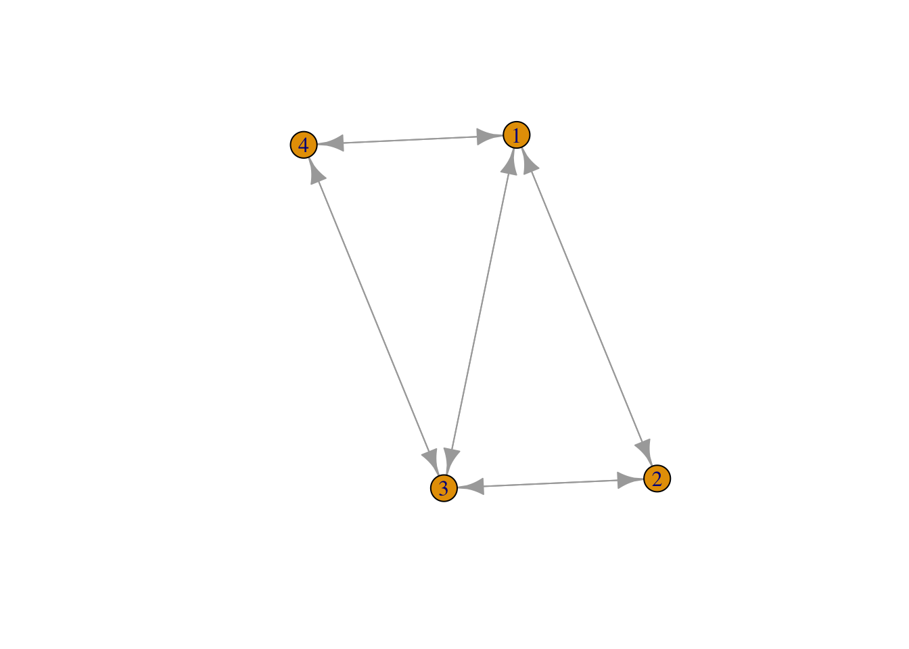
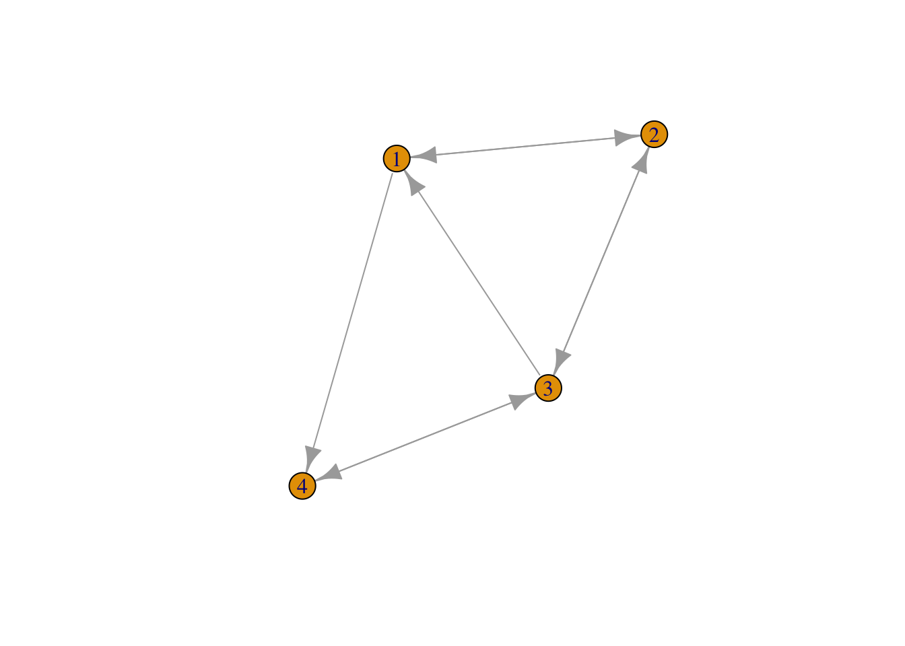

Homework week 2
On this page The work we did in class is displayed first. After which
I have described the data from one of the papers I will use for my
project and in the final section there is a description of the variables
I expect to need for my project.
in-class work
set.seed(42)
snm <- matrix(sample(x= 0:1, size=100*100, replace = T), nrow = 100, ncol = 100)
diag(snm) <- 0
snm2 <- t(snm)
snm[upper.tri(snm)] <- snm2[upper.tri(snm2)]
snmsums <- rowSums (x=snm)
mean(snmsums)
## [1] 48.46
#descriptives: mean nominations, stddev, outdegree, indegree
sum (snmsums)
## [1] 4846
density <- (sum(snmsums)/9900)
#density (total ties/possible ties)
density
## [1] 0.4894949
rm(snmd)
## Warning in rm(snmd): object 'snmd' not found
snmd <- matrix(sample(x= 0:1, size=10000, replace = T), nrow = 100, ncol = 100)
diag(snmd) <- 0
snmd2 <- (t(snmd[upper.tri(snmd)])+snmd[lower.tri(snmd)])
set.seed(40)
snt <- matrix(sample(x= 0:1, size=4*4, replace = T), nrow = 4, ncol = 4)
diag(snt) <- 0
snt2 <- t(snt)
snt[upper.tri(snt)] <- snt2[upper.tri(snt2)]
snt[lower.tri(snt)]
## [1] 0 1 1 0 1 1
# Print connections 1 (3 and 4)
# Test if 3 connects to 4
#
Making high density network in class
install.packages("igraph")
##
## The downloaded binary packages are in
## /var/folders/bq/bp7qm1nj40146k2d8nfv1j3c0000gn/T//Rtmpj4Xl1o/downloaded_packages
library(igraph)
##
## Attaching package: 'igraph'
## The following objects are masked from 'package:stats':
##
## decompose, spectrum
## The following object is masked from 'package:base':
##
## union
set.seed(123643)
snt <- matrix(sample(x= 0:1, size=16, replace = T), nrow = 4, ncol = 4)
snt_un <- snt + t(snt)
snt_un[snt_un == 2] <- 1
diag(snt_un) <-0
snt_un
## [,1] [,2] [,3] [,4]
## [1,] 0 1 1 1
## [2,] 1 0 1 0
## [3,] 1 1 0 1
## [4,] 1 0 1 0
netG <-graph_from_adjacency_matrix(snt_un)
class(netG)
## [1] "igraph"
plot(netG)

igraph::transitivity(netG, type="undirected")
## [1] 0.75
?igraph
Visually print the social network
set.seed(123643)
snt <- matrix(sample(x= 0:1, size=16, replace = T), nrow = 4, ncol = 4)
diag(snt) <-0
netG2 <-graph_from_adjacency_matrix(snt)
plot(netG2)

igraph::dyad_census(netG2)
## $mut
## [1] 3
##
## $asym
## [1] 2
##
## $null
## [1] 1
Notes data and methods
(Fronczak, Mrowinski, and Fronczak
2022).
First hypothesis
This study employs similar methods to what I want to do. To test
whether academics who have strong ties (many collaborations) also tend
to have more network overlap, this study plotted tie strength against
network overlap. However, due to established scientists with many ties
cooperating with scientists with much fewer publications the measure of
network overlap had to be amended to be unidirectional to account for
this. (symmetrical measure is strongly biased towards the scientists
with the most ties. this means that the more common scientists who in
reality has a large relative network overlap with the established
scientists appears to have a much weaker overlap which reverses the
results.

Formula asymetric overlap (Nij=common neighbours, Ki=degrees)

Tie strength is also measured asymmetrically (Wij = tie strength in
number of common publications, Pi = number of total publications)
The rational behind this is that for scientists with many
publication, each new tie carries less weight and reflects less strongly
on importance of the collaboration for the scientists.
This measure I am a bit more skeptical of. While changing the weight
of tie strength according to amount of publications, a linear relation
seems problematic. For someone who has published 60 papers in total 20
of which are published with the same coauthor, would have a tie strength
of: 20/60=0.33. At the same time a young scientists who has just
published their first two papers with two different co-authors would
have a tie strength of 0.5 with both of them.
Based on this example you would think the young scientists has
stronger ties. Theoretically however, it seems hard to argue that his
bond with both authors is stronger than the bond of the scientists who
has published 20 papers with the same colleague.
2nd hypothesis
The second hypothesis is tested by plotting the average number of
citations against the relative tie strength of scientists. The authors
have also normalized this metric against total number of publications to
account for established scientists getting more citations.
required data
I want to study how to what degree the measurement of tie strength
has unfairly strengthened the relationship between overlap and tie
strength in the paper by Fronczak, Mrowinski, and
Fronczak (2022). To do this I need three measures at the ego
level:
average relative tie strength
average absolute tie strength
average asymmetrical overlap
Furthermore, I want to study whether the positive effect on citations
of having on average weaker ties is stronger if these scientists are
involved with more interdisciplinary work. For this I need
H index on ego level
Number of disciplines a scientists has published in.
references
Fronczak, Agata, Maciej J. Mrowinski, and Piotr Fronczak. 2022.
“Scientific Success from the Perspective of the Strength of Weak
Ties.” Scientific Reports 12 (1).
https://doi.org/10.1038/s41598-022-09118-8.
LS0tCnRpdGxlOiAiUiB0dXRvcmlhbCIKYXV0aG9yOiAiQnJhbSIKZGF0ZTogIjIwMjUtMDktMDUiCm91dHB1dDogaHRtbF9kb2N1bWVudApiaWJsaW9ncmFwaHk6IHJlZmVyZW5jZXMuYmliCi0tLQoKYGBge3Igc2V0dXAsIGluY2x1ZGU9RkFMU0V9CmtuaXRyOjpvcHRzX2NodW5rJHNldChlY2hvID0gVFJVRSkKYGBgCgojIEhvbWV3b3JrIHdlZWsgMgoKT24gdGhpcyBwYWdlIFRoZSB3b3JrIHdlIGRpZCBpbiBjbGFzcyBpcyBkaXNwbGF5ZWQgZmlyc3QuIEFmdGVyIHdoaWNoIEkgaGF2ZSBkZXNjcmliZWQgdGhlIGRhdGEgZnJvbSBvbmUgb2YgdGhlIHBhcGVycyBJIHdpbGwgdXNlIGZvciBteSBwcm9qZWN0IGFuZCBpbiB0aGUgZmluYWwgc2VjdGlvbiB0aGVyZSBpcyBhIGRlc2NyaXB0aW9uIG9mIHRoZSB2YXJpYWJsZXMgSSBleHBlY3QgdG8gbmVlZCBmb3IgbXkgcHJvamVjdC4KCi0tLS0tLS0tLS0tLS0tLS0tLS0tLS0tLS0tLS0tLS0tLS0tLS0tLS0tLS0tLS0tLS0tLS0tLS0tLS0tLS0tLS0tLS0tLS0tLQoKIyBpbi1jbGFzcyB3b3JrCgpgYGB7cn0Kc2V0LnNlZWQoNDIpCnNubSA8LSBtYXRyaXgoc2FtcGxlKHg9IDA6MSwgc2l6ZT0xMDAqMTAwLCByZXBsYWNlID0gVCksIG5yb3cgPSAxMDAsIG5jb2wgPSAxMDApCgpkaWFnKHNubSkgPC0gMAoKc25tMiA8LSB0KHNubSkKCnNubVt1cHBlci50cmkoc25tKV0gPC0gc25tMlt1cHBlci50cmkoc25tMildCgpzbm1zdW1zIDwtIHJvd1N1bXMgKHg9c25tKQptZWFuKHNubXN1bXMpCgojZGVzY3JpcHRpdmVzOiBtZWFuIG5vbWluYXRpb25zLCBzdGRkZXYsIG91dGRlZ3JlZSwgaW5kZWdyZWUKc3VtIChzbm1zdW1zKQoKZGVuc2l0eSA8LSAoc3VtKHNubXN1bXMpLzk5MDApCiNkZW5zaXR5ICh0b3RhbCB0aWVzL3Bvc3NpYmxlIHRpZXMpCgpkZW5zaXR5CgpybShzbm1kKQoKc25tZCA8LSBtYXRyaXgoc2FtcGxlKHg9IDA6MSwgc2l6ZT0xMDAwMCwgcmVwbGFjZSA9IFQpLCBucm93ID0gMTAwLCBuY29sID0gMTAwKQoKZGlhZyhzbm1kKSA8LSAwCgpzbm1kMiA8LSAodChzbm1kW3VwcGVyLnRyaShzbm1kKV0pK3NubWRbbG93ZXIudHJpKHNubWQpXSkKCgpzZXQuc2VlZCg0MCkKCnNudCA8LSBtYXRyaXgoc2FtcGxlKHg9IDA6MSwgc2l6ZT00KjQsIHJlcGxhY2UgPSBUKSwgbnJvdyA9IDQsIG5jb2wgPSA0KQoKZGlhZyhzbnQpIDwtIDAKCnNudDIgPC0gdChzbnQpCgoKCnNudFt1cHBlci50cmkoc250KV0gPC0gc250Mlt1cHBlci50cmkoc250MildCnNudFtsb3dlci50cmkoc250KV0KCiMgUHJpbnQgY29ubmVjdGlvbnMgMSAoMyBhbmQgNCkKIyBUZXN0IGlmIDMgY29ubmVjdHMgdG8gNAojCmBgYAoKTWFraW5nIGhpZ2ggZGVuc2l0eSBuZXR3b3JrIGluIGNsYXNzCgpgYGB7cn0KaW5zdGFsbC5wYWNrYWdlcygiaWdyYXBoIikKbGlicmFyeShpZ3JhcGgpCgpzZXQuc2VlZCgxMjM2NDMpCnNudCA8LSBtYXRyaXgoc2FtcGxlKHg9IDA6MSwgc2l6ZT0xNiwgcmVwbGFjZSA9IFQpLCBucm93ID0gNCwgbmNvbCA9IDQpCgoKc250X3VuIDwtIHNudCArIHQoc250KQpzbnRfdW5bc250X3VuID09IDJdIDwtIDEKZGlhZyhzbnRfdW4pIDwtMApzbnRfdW4KbmV0RyA8LWdyYXBoX2Zyb21fYWRqYWNlbmN5X21hdHJpeChzbnRfdW4pCmNsYXNzKG5ldEcpCnBsb3QobmV0RykKaWdyYXBoOjp0cmFuc2l0aXZpdHkobmV0RywgdHlwZT0idW5kaXJlY3RlZCIpCgo/aWdyYXBoCmBgYAoKVmlzdWFsbHkgcHJpbnQgdGhlIHNvY2lhbCBuZXR3b3JrCgpgYGB7cn0Kc2V0LnNlZWQoMTIzNjQzKQpzbnQgPC0gbWF0cml4KHNhbXBsZSh4PSAwOjEsIHNpemU9MTYsIHJlcGxhY2UgPSBUKSwgbnJvdyA9IDQsIG5jb2wgPSA0KQoKZGlhZyhzbnQpIDwtMAoKbmV0RzIgPC1ncmFwaF9mcm9tX2FkamFjZW5jeV9tYXRyaXgoc250KQpwbG90KG5ldEcyKQppZ3JhcGg6OmR5YWRfY2Vuc3VzKG5ldEcyKQoKYGBgCgotLS0tLS0tLS0tLS0tLS0tLS0tLS0tLS0tLS0tLS0tLS0tLS0tLS0tLS0tLS0tLS0tLS0tLS0tLS0tLS0tLS0tLS0tLS0tLS0KCiMgTm90ZXMgZGF0YSBhbmQgbWV0aG9kcyBbQGZyb25jemFrMjAyMl0uCgoqKkZpcnN0IGh5cG90aGVzaXMqKgoKVGhpcyBzdHVkeSBlbXBsb3lzIHNpbWlsYXIgbWV0aG9kcyB0byB3aGF0IEkgd2FudCB0byBkby4gVG8gdGVzdCB3aGV0aGVyIGFjYWRlbWljcyB3aG8gaGF2ZSBzdHJvbmcgdGllcyAobWFueSBjb2xsYWJvcmF0aW9ucykgYWxzbyB0ZW5kIHRvIGhhdmUgbW9yZSBuZXR3b3JrIG92ZXJsYXAsIHRoaXMgc3R1ZHkgcGxvdHRlZCB0aWUgc3RyZW5ndGggYWdhaW5zdCBuZXR3b3JrIG92ZXJsYXAuIEhvd2V2ZXIsIGR1ZSB0byBlc3RhYmxpc2hlZCBzY2llbnRpc3RzIHdpdGggbWFueSB0aWVzIGNvb3BlcmF0aW5nIHdpdGggc2NpZW50aXN0cyB3aXRoIG11Y2ggZmV3ZXIgcHVibGljYXRpb25zIHRoZSBtZWFzdXJlIG9mIG5ldHdvcmsgb3ZlcmxhcCBoYWQgdG8gYmUgYW1lbmRlZCB0byBiZSB1bmlkaXJlY3Rpb25hbCB0byBhY2NvdW50IGZvciB0aGlzLiAoc3ltbWV0cmljYWwgbWVhc3VyZSBpcyBzdHJvbmdseSBiaWFzZWQgdG93YXJkcyB0aGUgc2NpZW50aXN0cyB3aXRoIHRoZSBtb3N0IHRpZXMuIHRoaXMgbWVhbnMgdGhhdCB0aGUgbW9yZSBjb21tb24gc2NpZW50aXN0cyB3aG8gaW4gcmVhbGl0eSBoYXMgYSBsYXJnZSByZWxhdGl2ZSBuZXR3b3JrIG92ZXJsYXAgd2l0aCB0aGUgZXN0YWJsaXNoZWQgc2NpZW50aXN0cyBhcHBlYXJzIHRvIGhhdmUgYSBtdWNoIHdlYWtlciBvdmVybGFwIHdoaWNoIHJldmVyc2VzIHRoZSByZXN1bHRzLgoKIVtdKGltYWdlcy9jbGlwYm9hcmQtMTY5Nzg1OTY5Ny5wbmcpCgpGb3JtdWxhIGFzeW1ldHJpYyBvdmVybGFwIChOaWo9Y29tbW9uIG5laWdoYm91cnMsIEtpPWRlZ3JlZXMpCgohW10oaW1hZ2VzL2NsaXBib2FyZC02NzIyMTk2NDAucG5nKXt3aWR0aD0iMTYyIn0KClRpZSBzdHJlbmd0aCBpcyBhbHNvIG1lYXN1cmVkIGFzeW1tZXRyaWNhbGx5IChXaWogPSB0aWUgc3RyZW5ndGggaW4gbnVtYmVyIG9mIGNvbW1vbiBwdWJsaWNhdGlvbnMsIFBpID0gbnVtYmVyIG9mIHRvdGFsIHB1YmxpY2F0aW9ucykKCiFbXShpbWFnZXMvY2xpcGJvYXJkLTQyODIzODU1MTMucG5nKXt3aWR0aD0iMTYyIn0KClRoZSByYXRpb25hbCBiZWhpbmQgdGhpcyBpcyB0aGF0IGZvciBzY2llbnRpc3RzIHdpdGggbWFueSBwdWJsaWNhdGlvbiwgZWFjaCBuZXcgdGllIGNhcnJpZXMgbGVzcyB3ZWlnaHQgYW5kIHJlZmxlY3RzIGxlc3Mgc3Ryb25nbHkgb24gaW1wb3J0YW5jZSBvZiB0aGUgY29sbGFib3JhdGlvbiBmb3IgdGhlIHNjaWVudGlzdHMuCgpUaGlzIG1lYXN1cmUgSSBhbSBhIGJpdCBtb3JlIHNrZXB0aWNhbCBvZi4gV2hpbGUgY2hhbmdpbmcgdGhlIHdlaWdodCBvZiB0aWUgc3RyZW5ndGggYWNjb3JkaW5nIHRvIGFtb3VudCBvZiBwdWJsaWNhdGlvbnMsIGEgbGluZWFyIHJlbGF0aW9uIHNlZW1zIHByb2JsZW1hdGljLiBGb3Igc29tZW9uZSB3aG8gaGFzIHB1Ymxpc2hlZCA2MCBwYXBlcnMgaW4gdG90YWwgMjAgb2Ygd2hpY2ggYXJlIHB1Ymxpc2hlZCB3aXRoIHRoZSBzYW1lIGNvYXV0aG9yLCB3b3VsZCBoYXZlIGEgdGllIHN0cmVuZ3RoIG9mOiAyMC82MD0wLjMzLiBBdCB0aGUgc2FtZSB0aW1lIGEgeW91bmcgc2NpZW50aXN0cyB3aG8gaGFzIGp1c3QgcHVibGlzaGVkIHRoZWlyIGZpcnN0IHR3byBwYXBlcnMgd2l0aCB0d28gZGlmZmVyZW50IGNvLWF1dGhvcnMgd291bGQgaGF2ZSBhIHRpZSBzdHJlbmd0aCBvZiAwLjUgd2l0aCBib3RoIG9mIHRoZW0uCgpCYXNlZCBvbiB0aGlzIGV4YW1wbGUgeW91IHdvdWxkIHRoaW5rIHRoZSB5b3VuZyBzY2llbnRpc3RzIGhhcyBzdHJvbmdlciB0aWVzLiBUaGVvcmV0aWNhbGx5IGhvd2V2ZXIsIGl0IHNlZW1zIGhhcmQgdG8gYXJndWUgdGhhdCBoaXMgYm9uZCB3aXRoIGJvdGggYXV0aG9ycyBpcyBzdHJvbmdlciB0aGFuIHRoZSBib25kIG9mIHRoZSBzY2llbnRpc3RzIHdobyBoYXMgcHVibGlzaGVkIDIwIHBhcGVycyB3aXRoIHRoZSBzYW1lIGNvbGxlYWd1ZS4KCioqMm5kIGh5cG90aGVzaXMqKgoKVGhlIHNlY29uZCBoeXBvdGhlc2lzIGlzIHRlc3RlZCBieSBwbG90dGluZyB0aGUgYXZlcmFnZSBudW1iZXIgb2YgY2l0YXRpb25zIGFnYWluc3QgdGhlIHJlbGF0aXZlIHRpZSBzdHJlbmd0aCBvZiBzY2llbnRpc3RzLiBUaGUgYXV0aG9ycyBoYXZlIGFsc28gbm9ybWFsaXplZCB0aGlzIG1ldHJpYyBhZ2FpbnN0IHRvdGFsIG51bWJlciBvZiBwdWJsaWNhdGlvbnMgdG8gYWNjb3VudCBmb3IgZXN0YWJsaXNoZWQgc2NpZW50aXN0cyBnZXR0aW5nIG1vcmUgY2l0YXRpb25zLgoKLS0tLS0tLS0tLS0tLS0tLS0tLS0tLS0tLS0tLS0tLS0tLS0tLS0tLS0tLS0tLS0tLS0tLS0tLS0tLS0tLS0tLS0tLS0tLS0tCgojIHJlcXVpcmVkIGRhdGEKCkkgd2FudCB0byBzdHVkeSBob3cgdG8gd2hhdCBkZWdyZWUgdGhlIG1lYXN1cmVtZW50IG9mIHRpZSBzdHJlbmd0aCBoYXMgdW5mYWlybHkgc3RyZW5ndGhlbmVkIHRoZSByZWxhdGlvbnNoaXAgYmV0d2VlbiBvdmVybGFwIGFuZCB0aWUgc3RyZW5ndGggaW4gdGhlIHBhcGVyIGJ5IEBmcm9uY3phazIwMjIuIFRvIGRvIHRoaXMgSSBuZWVkIHRocmVlIG1lYXN1cmVzIGF0IHRoZSBlZ28gbGV2ZWw6CgphdmVyYWdlIHJlbGF0aXZlIHRpZSBzdHJlbmd0aAoKLSAgIGFtb3VudCBvZiBkdXBsaWNhdGUgY29sbGFib3JhdGlvbnMKCi0gICBhbW91bnQgb2YgdG90YWwgcHVibGljYXRpb25zCgphdmVyYWdlIGFic29sdXRlIHRpZSBzdHJlbmd0aAoKYXZlcmFnZSBhc3ltbWV0cmljYWwgb3ZlcmxhcAoKLSAgIERpZmZlcmVudCBjb2xsYWJvcmF0b3JzCgotICAgCgpGdXJ0aGVybW9yZSwgSSB3YW50IHRvIHN0dWR5IHdoZXRoZXIgdGhlIHBvc2l0aXZlIGVmZmVjdCBvbiBjaXRhdGlvbnMgb2YgaGF2aW5nIG9uIGF2ZXJhZ2Ugd2Vha2VyIHRpZXMgaXMgc3Ryb25nZXIgaWYgdGhlc2Ugc2NpZW50aXN0cyBhcmUgaW52b2x2ZWQgd2l0aCBtb3JlIGludGVyZGlzY2lwbGluYXJ5IHdvcmsuIEZvciB0aGlzIEkgbmVlZAoKSCBpbmRleCBvbiBlZ28gbGV2ZWwKCk51bWJlciBvZiBkaXNjaXBsaW5lcyBhIHNjaWVudGlzdHMgaGFzIHB1Ymxpc2hlZCBpbi4KCi0tLS0tLS0tLS0tLS0tLS0tLS0tLS0tLS0tLS0tLS0tLS0tLS0tLS0tLS0tLS0tLS0tLS0tLS0tLS0tLS0tLS0tLS0tLS0tLQoKIyByZWZlcmVuY2VzCg==